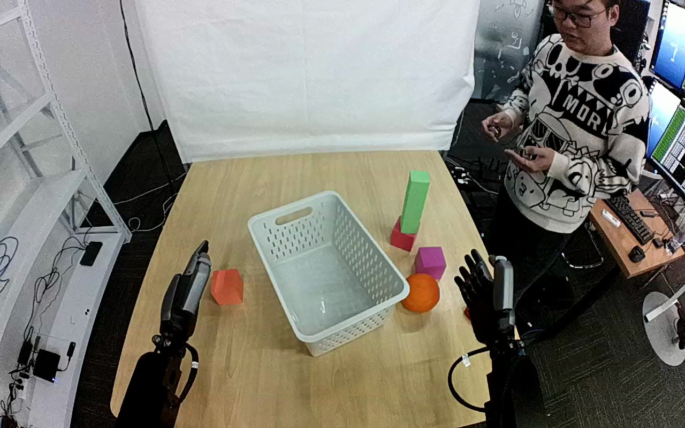

ActionNet · 01JJ136C6DH2EZB42B
01jj136c6dh2ezb42b

Annotation
From the dedicated visual review of this video (humanoid_action_v1). Plain text · JSON
Observed outcome
- Status
successful_visible_placement
- Description
Orange is released onto the floor of the white basket and remains there while the hand from the lower-right edge withdraws to its rest pose.
- Selected action outcome
successful_visible_placement
- Source overall success label
not used to infer outcome
Hand roles
- Lower right visible arm
Sole manipulating hand: reaches the orange, closes thumb and fingers around opposing sides of it, bears it through the lift and transport, lowers it into the basket, opens to release it, then rises out and withdraws to the lower right.
- Lower left visible arm
Remains stationary beside the table on image left beside the small orange block; no observed contact with the orange, basket or any other object.
Coordination
Single-hand pick and place. No hand-to-hand transfer, bimanual stabilization, or physical assistance. A person standing at the right edge of the scene moves about but does not touch the robot or objects.
Robot-side evidence
- Active arm
hand entering from the lower-right edge of the initial image
- Initial frame evidence
Two dark dexterous-hand arms enter from the near lower image edges; the active hand is attached to the lower-right forearm and lies beside the orange at frame 0. Torso and shoulders are outside the image. Hand geometry (opposing thumb, grouped fingers) does not independently establish whether the camera is mirrored or its pose relative to the robot body.
- Confidence
Visible-arm identity is unambiguous; anatomical left/right is not independently established.
Chronology
| Frames | Observation |
|---|---|
| 0–40 | Orange rests on the tabletop between the white basket and the pink block; both robot hands are clear and upright (open, fingers up). The standing person at image right gestures. No robot motion yet. |
| 42–84 | The lower-right hand tilts and swings left toward the orange, thumb and fingers open. At frame 56 the open hand is beside the orange's right side; at frame 70 and 84 the thumb-side finger group sits under/left of the orange while the palm hovers on its right/upper side. |
| 86–126 | The hand adjusts around the orange; thumb and fingers close on opposing sides (thumb on the near/left side, palm and fingers on the far/right side). Frame 100 shows the hand still adjusting; by frames 114-126 the orange is enclosed between the thumb and palm/fingers, still resting on the table. |
| 128–160 | The hand lifts the orange off the table (clear by frame 142; frame 150-160 show it well above the table and near the green block tower), orange borne entirely by this hand. |
| 162–214 | The hand carries the orange up and leftward past the pink and red blocks, wrist turned so the palm covers the top of the orange. At frames 180-200 the orange is held high above the table edge, moving toward the basket. |
| 216–262 | The held orange is brought over the right wall of the basket and lowered into it; frame 240 shows the orange and hand inside the basket outline near its far-left corner. |
| 264–316 | The hand continues to hold the orange low inside the basket (frames 270-316 almost unchanged apart from slight lowering); at frame 316 the orange touches the basket floor with the hand still around it. |
| 318–332 | The fingers open and the hand lifts: by frame 326 the orange sits on the basket floor with the hand opening above it; by frame 332 the hand is rising out of the basket. |
| 334–380 | The hand rises out of the basket (frame 340 hand fully above the basket rim) and withdraws toward the lower right (frame 360 near the table edge), orange resting in the basket. |
| 382–409 | The hand returns to its initial upright rest pose at the lower right with fingers up; the orange remains in the basket. No further manipulation. |
Differences from the publisher annotation
- The source calls the target a container; the observed target is a white perforated plastic basket. The usable prompt specifies the white basket.
- The source annotation names an orange; visually a round orange ball-shaped object matches, with a small orange block on the lower-left table that is not manipulated. The prompt identifies it by its position beside the basket.
Uncertainties
- Actual fruit versus prop material cannot be established visually.
- The exact frame of table separation (128-142) and basket-floor contact (about 316-326) are bracketed from sampled frames and hand occlusion.
- Torso and shoulder attachment are outside the image, and camera pose or mirroring is not independently established. Anatomical left/right is uncertain; prompt uses the unambiguous hand entering from the lower-right edge.
- Palm orientation during the high carry (frames 160-214) is hard to resolve because the orange occludes the fingers; the prompt states only the closed-hand carry.
Complete review record action_review.json
{
"dataset": "ActionNet",
"episode_id": "01JJ136C6DH2EZB42B",
"prompt_protocol": "humanoid_action_v1",
"prompt_provenance": "visually_authored_from_video_and_initial_frame",
"review_scope": "One dedicated agent reviewed the complete unchanged 410-frame top/rgb.mp4 and the generation first frame. Full single-task sequence retained.",
"source_video": "../../original/top/rgb.mp4",
"conditioning_first_frame": "../first_frame.png",
"generation_video": "../../original/top/rgb.mp4",
"action_prompt": "../actiongeneration_prompt.txt",
"source_frame_start": 0,
"source_frame_end_exclusive": 410,
"fps_rational": "30/1",
"resolution": [
1280,
800
],
"source_annotation": {
"verbatim_task_prompt": "Pick up the orange and place it into the container.",
"task_prompt_path": "../../original/task_prompt.txt"
},
"anatomical_side_evidence": {
"active_arm": "hand entering from the lower-right edge of the initial image",
"initial_frame_evidence": "Two dark dexterous-hand arms enter from the near lower image edges; the active hand is attached to the lower-right forearm and lies beside the orange at frame 0. Torso and shoulders are outside the image. Hand geometry (opposing thumb, grouped fingers) does not independently establish whether the camera is mirrored or its pose relative to the robot body.",
"confidence": "Visible-arm identity is unambiguous; anatomical left/right is not independently established."
},
"arm_roles": {
"lower_right_visible_arm": "Sole manipulating hand: reaches the orange, closes thumb and fingers around opposing sides of it, bears it through the lift and transport, lowers it into the basket, opens to release it, then rises out and withdraws to the lower right.",
"lower_left_visible_arm": "Remains stationary beside the table on image left beside the small orange block; no observed contact with the orange, basket or any other object."
},
"coordination": "Single-hand pick and place. No hand-to-hand transfer, bimanual stabilization, or physical assistance. A person standing at the right edge of the scene moves about but does not touch the robot or objects.",
"chronology": [
{
"frames": [
0,
40
],
"observation": "Orange rests on the tabletop between the white basket and the pink block; both robot hands are clear and upright (open, fingers up). The standing person at image right gestures. No robot motion yet."
},
{
"frames": [
42,
84
],
"observation": "The lower-right hand tilts and swings left toward the orange, thumb and fingers open. At frame 56 the open hand is beside the orange's right side; at frame 70 and 84 the thumb-side finger group sits under/left of the orange while the palm hovers on its right/upper side."
},
{
"frames": [
86,
126
],
"observation": "The hand adjusts around the orange; thumb and fingers close on opposing sides (thumb on the near/left side, palm and fingers on the far/right side). Frame 100 shows the hand still adjusting; by frames 114-126 the orange is enclosed between the thumb and palm/fingers, still resting on the table."
},
{
"frames": [
128,
160
],
"observation": "The hand lifts the orange off the table (clear by frame 142; frame 150-160 show it well above the table and near the green block tower), orange borne entirely by this hand."
},
{
"frames": [
162,
214
],
"observation": "The hand carries the orange up and leftward past the pink and red blocks, wrist turned so the palm covers the top of the orange. At frames 180-200 the orange is held high above the table edge, moving toward the basket."
},
{
"frames": [
216,
262
],
"observation": "The held orange is brought over the right wall of the basket and lowered into it; frame 240 shows the orange and hand inside the basket outline near its far-left corner."
},
{
"frames": [
264,
316
],
"observation": "The hand continues to hold the orange low inside the basket (frames 270-316 almost unchanged apart from slight lowering); at frame 316 the orange touches the basket floor with the hand still around it."
},
{
"frames": [
318,
332
],
"observation": "The fingers open and the hand lifts: by frame 326 the orange sits on the basket floor with the hand opening above it; by frame 332 the hand is rising out of the basket."
},
{
"frames": [
334,
380
],
"observation": "The hand rises out of the basket (frame 340 hand fully above the basket rim) and withdraws toward the lower right (frame 360 near the table edge), orange resting in the basket."
},
{
"frames": [
382,
409
],
"observation": "The hand returns to its initial upright rest pose at the lower right with fingers up; the orange remains in the basket. No further manipulation."
}
],
"observed_outcome": {
"status": "successful_visible_placement",
"description": "Orange is released onto the floor of the white basket and remains there while the hand from the lower-right edge withdraws to its rest pose.",
"selected_action_outcome": "successful_visible_placement",
"source_overall_success_label": "not used to infer outcome"
},
"source_annotation_discrepancies": [
"The source calls the target a container; the observed target is a white perforated plastic basket. The usable prompt specifies the white basket.",
"The source annotation names an orange; visually a round orange ball-shaped object matches, with a small orange block on the lower-left table that is not manipulated. The prompt identifies it by its position beside the basket."
],
"uncertainties": [
"Actual fruit versus prop material cannot be established visually.",
"The exact frame of table separation (128-142) and basket-floor contact (about 316-326) are bracketed from sampled frames and hand occlusion.",
"Torso and shoulder attachment are outside the image, and camera pose or mirroring is not independently established. Anatomical left/right is uncertain; prompt uses the unambiguous hand entering from the lower-right edge.",
"Palm orientation during the high carry (frames 160-214) is hard to resolve because the orange occludes the fingers; the prompt states only the closed-hand carry."
],
"inspection_coverage": {
"total_decoded_frames": 410,
"overview_frame_indices": {
"start": 0,
"stop_inclusive": 408,
"step": 2,
"count": 205
},
"overview_method": "Decoded RGB every second frame into eighteen temporary 4-by-3 contact sheets outside dataset folders; reviewed all sheets.",
"native_resolution_frames": [
0,
40,
56,
70,
84,
96,
100,
108,
114,
120,
126,
132,
136,
142,
144,
150,
160,
180,
200,
240,
270,
300,
308,
314,
316,
320,
324,
326,
332,
340,
360,
409
],
"native_resolution": [
1280,
800
],
"initial_png_inspected_after_full_sequence": true,
"temporary_evidence_location": "/tmp/an_review_01JJ136C6DH2EZB42B (removed after review; not under generation input)",
"retained_evidence_frame_directories": false
},
"preservation": {
"whole_original_single_task_clip_retained": true,
"crop": false,
"shorten": false,
"resize": false,
"reencode": false,
"source_and_generation_sha256_equal": true
},
"prompt_word_count": 83
}